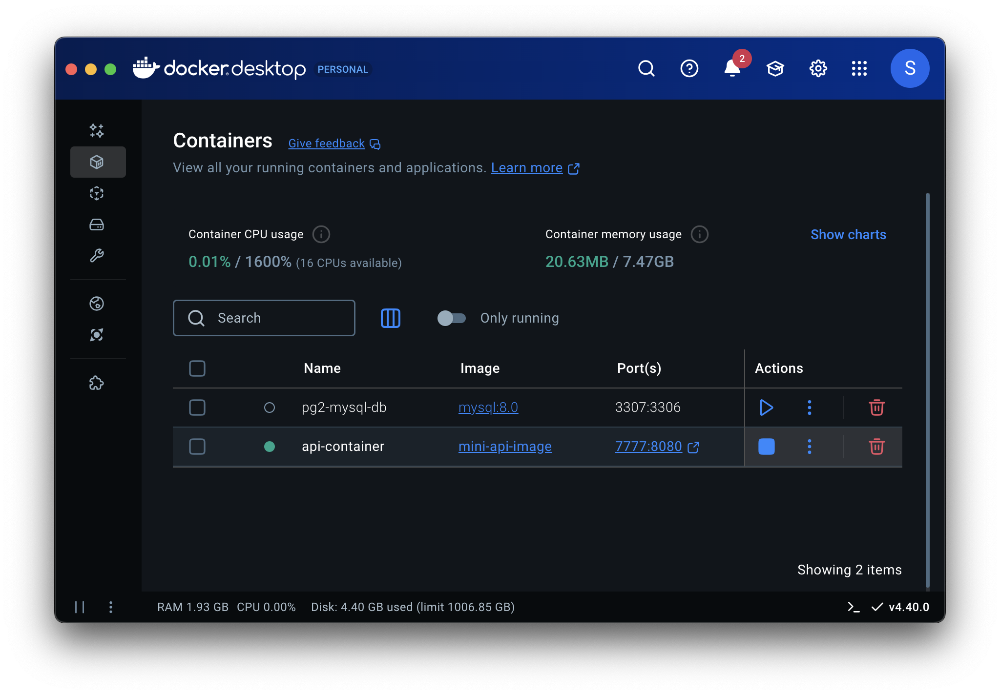
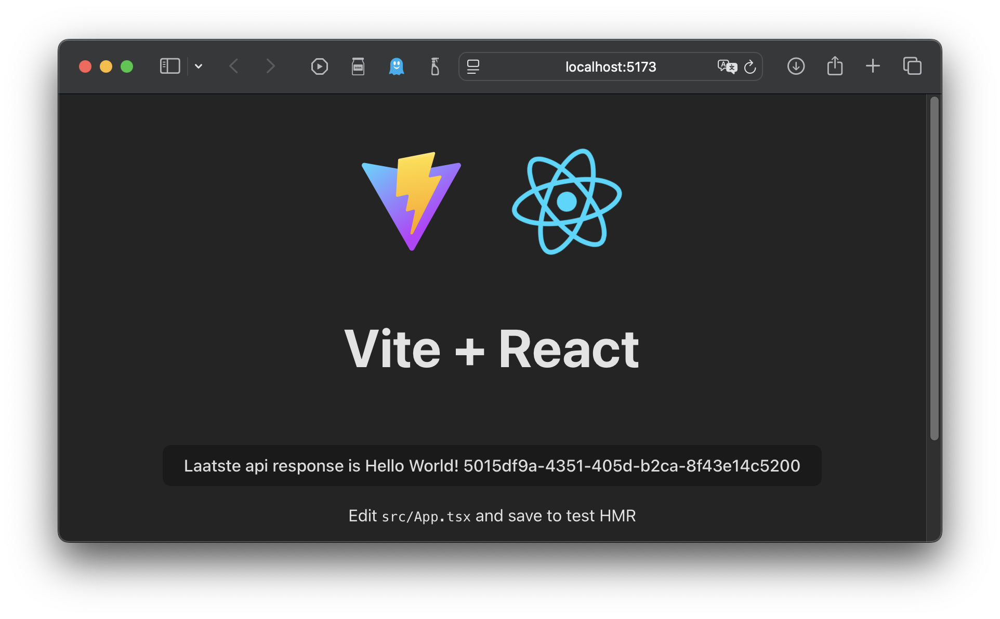
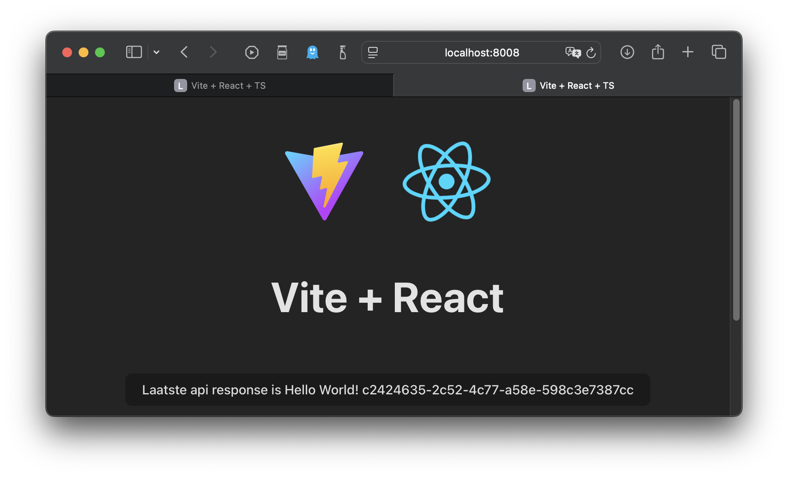
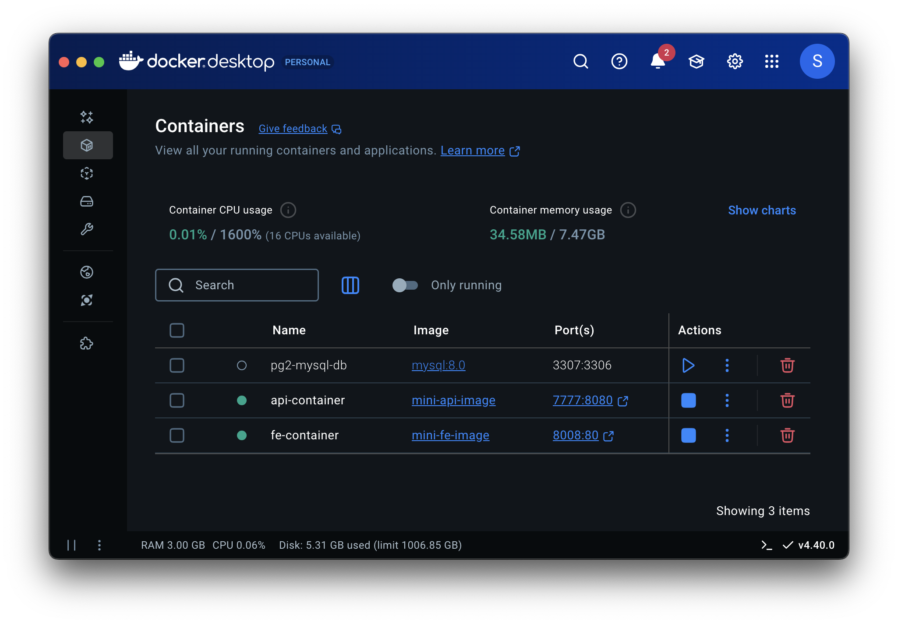
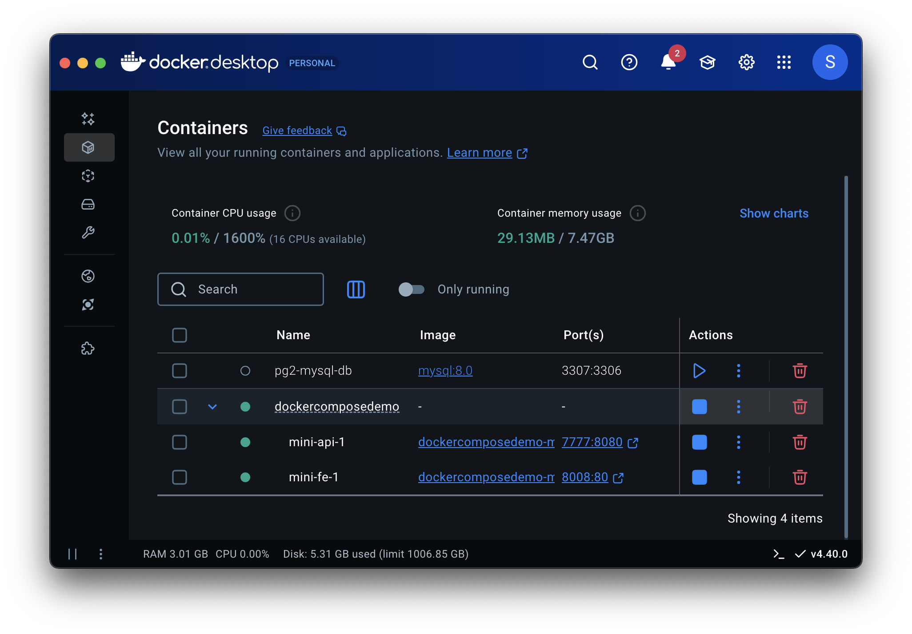
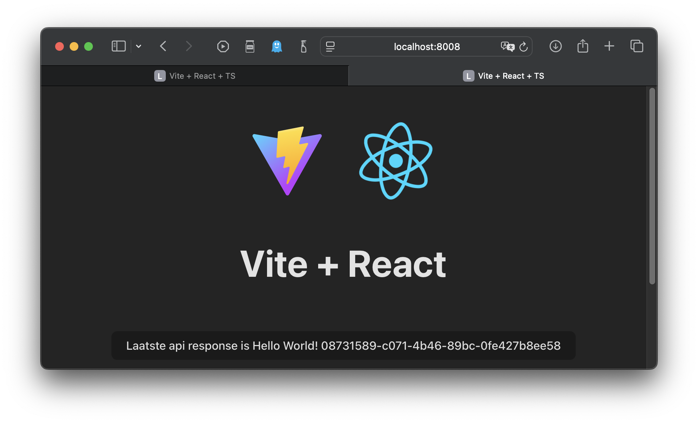

Docker (Compose) Gebruiken
Backend in Docker
Project Maken
stefancourteaux@MBP DockerComposeDemo % pwd /Users/stefancourteaux/Source/PG3Prep/DockerComposeDemo stefancourteaux@MBP DockerComposeDemo % mkdir backend stefancourteaux@MBP DockerComposeDemo % cd backend
stefancourteaux@MBP backend % dotnet new web -o MiniApi The template "ASP.NET Core Empty" was created successfully. Processing post-creation actions... Restoring /Users/stefancourteaux/Source/PG3Prep/DockerComposeDemo/backend/MiniApi/MiniApi.csproj: Restore succeeded.
stefancourteaux@MBP backend % dotnet new sln --name Backend The template "Solution File" was created successfully. stefancourteaux@MBP backend % dotnet sln add MiniApi/MiniApi.csproj Project `MiniApi/MiniApi.csproj` added to the solution.
stefancourteaux@MBP backend % dotnet run --project MiniApi/MiniApi.csproj
Using launch settings from MiniApi/Properties/launchSettings.json...
Building...
info: Microsoft.Hosting.Lifetime[14]
Now listening on: http://localhost:5021
info: Microsoft.Hosting.Lifetime[0]
Application started. Press Ctrl+C to shut down.
info: Microsoft.Hosting.Lifetime[0]
Hosting environment: Development
info: Microsoft.Hosting.Lifetime[0]
Content root path: /Users/stefancourteaux/Source/PG3Prep/DockerComposeDemo/backend/MiniApi
stefancourteaux@MBP ~ % curl localhost:5021 Hello World!
var builder = WebApplication.CreateBuilder(args);
builder.Services.AddCors(options =>
{
options.AddDefaultPolicy(
policy =>
{
policy.SetIsOriginAllowed(origin =>
new Uri(origin).Host == "localhost"); (1)
});
});
var app = builder.Build();
app.MapGet("/", () => $"Hello World! {Guid.NewGuid()}"); (2)
app.UseCors();
app.Run();| 1 | Localhost toegelaten ongeacht port/verb etc |
| 2 | Responses uniek maken |
Dockerizen
stefancourteaux@MBP MiniApi % pwd /Users/stefancourteaux/Source/PG3Prep/DockerComposeDemo/backend/MiniApi
FROM mcr.microsoft.com/dotnet/sdk:9.0 AS build
WORKDIR /App
# Copy everything
COPY . ./
# Restore as distinct layers
RUN dotnet restore
# Build and publish a release
RUN dotnet publish -o out
# Build runtime image
FROM mcr.microsoft.com/dotnet/aspnet:9.0
WORKDIR /App
COPY --from=build /App/out .
ENTRYPOINT ["dotnet", "MiniApi.dll"]stefancourteaux@MBP MiniApi % docker build -t mini-api-image -f Dockerfile . [+] Building 58.9s (14/14) FINISHED
stefancourteaux@MBP MiniApi % docker image ls REPOSITORY TAG IMAGE ID CREATED mini-api-image latest 2d92b4e1dfd6 2 minutes ago (1) mcr.microsoft.com/dotnet/aspnet 9.0 c3aee4ea4f51 2 weeks ago mysql 8.0 bf577825b52a 3 months ago
| 1 | Daar staat ie dan. |
stefancourteaux@MBP MiniApi % docker run -p 7777:8080 --name api-container mini-api-image (1)
info: Microsoft.Hosting.Lifetime[14]
Now listening on: http://[::]:8080
Application started. Press Ctrl+C to shut down.
Content root path: /App
| 1 | 8080 is standaard poort in .net container |

stefancourteaux@MBP MiniApi % curl http://localhost:7777 Hello World! 88f75ce8-97f2-4446-ab5b-1103e5380509%
Frontend in Docker
Project Maken
stefancourteaux@MBP DockerComposeDemo % pwd /Users/stefancourteaux/Source/PG3Prep/DockerComposeDemo stefancourteaux@MBP DockerComposeDemo % ls backend stefancourteaux@MBP DockerComposeDemo % mkdir frontend stefancourteaux@MBP DockerComposeDemo % cd frontend stefancourteaux@MBP frontend % pwd /Users/stefancourteaux/Source/PG3Prep/DockerComposeDemo/frontend
stefancourteaux@@MBP frontend % npm create vite@latest mini-fe -- --template react-ts > npx > create-vite mini-fe --template react-ts Scaffolding project in /Users/stefancourteaux/Source/PG3Prep/DockerComposeDemo/frontend/mini-fe Done. Now run: cd mini-fe npm install npm run dev
stefancourteaux@@MBP frontend % cd mini-fe
stefancourteaux@@MBP mini-fe % npm install added 185 packages, and audited 186 packages in 12s
stefancourteaux@@MBP mini-fe % npm run dev > mini-fe@0.0.0 dev > vite VITE v6.3.2 ready in 839 ms ➜ Local: http://localhost:5173/ ➜ Network: use --host to expose ➜ press h + enter to show help....
npm install axios
import { useState } from 'react'
import axios from 'axios'
import reactLogo from './assets/react.svg'
import viteLogo from '/vite.svg'
import './App.css'
function App() {
const [miniApiResponse, setResponse] = useState('nog niets ontvangen')
const fetchData = async () => {
try {
const response = await axios.get('http://localhost:7777');
setResponse(response.data);
} catch (error) {
console.error('MiniApi call mislukt:', error);
}
};
return (
<>
<div>
<a href="https://vite.dev" target="_blank">
<img src={viteLogo} className="logo" alt="Vite logo" />
</a>
<a href="https://react.dev" target="_blank">
<img src={reactLogo} className="logo react" alt="React logo" />
</a>
</div>
<h1>Vite + React</h1>
<div className="card">
<button onClick={fetchData}>
Laatste api response is {miniApiResponse}
</button>
<p>
Edit <code>src/App.tsx</code> and save to test HMR
</p>
</div>
<p className="read-the-docs">
Click on the Vite and React logos to learn more
</p>
</>
)
}
export default AppDe react app is nu verbonden met de backend in Docker.

Dockerizen
stefancourteaux@@MBP frontend % pwd /Users/stefancourteaux/Source/PG3Prep/DockerComposeDemo/frontend/mini-fe
# Build Stage
FROM node:lts-alpine AS build
WORKDIR /app
COPY ./package*.json ./
RUN npm install
COPY . .
RUN npm run build
# Production Stage
FROM nginx:stable-alpine AS production
COPY --from=build /app/dist /usr/share/nginx/html
EXPOSE 80
CMD ["nginx", "-g", "daemon off;"]stefancourteaux@@MBP mini-fe % docker build -t mini-fe-image -f Dockerfile .
stefancourteaux@@MBP mini-fe % docker run -p 8008:80 --name fe-container mini-fe-image
De react app die nu ook uit docker geserved wordt, spreekt met success tegen de api die ook uit docker geserved wordt.

Docker Compose
Op dit moment staan front- en backend wel in docker, maar de relatie tussen de 2 containers is niet duidelijk. Wij weten dat ze samen horen, maar docker weet dat niet.

We kunnen dit expliciet maken. We kunnen een app samenstellen ofte composen uit meerdere docker images.
stefancourteaux@MBP DockerComposeDemo % pwd /Users/stefancourteaux/Source/PG3Prep/DockerComposeDemo
version: '3.8'
services:
mini-api:
build:
context: ./backend/MiniApi
dockerfile: Dockerfile
ports:
- "7777:8080"
mini-fe:
build:
context: ./frontend/mini-fe
dockerfile: Dockerfile
ports:
- "8008:80"stefancourteaux@MBP DockerComposeDemo % docker compose up
Docker weet nu wel dat de containers samen horen.

De App werkt nog steeds naar behoren.

| Je kan uiteraard nog veel complexere scenario’s opzetten en dieper ingaan op (virtual) networking. Dat ondervind je wel in de praktijk indien je terecht komt in een omgeving waar Docker (intensief) gebruikt wordt. Dat wordt ook stilaan een verhaal voor de collega’s van Systemen en Netwerken. |
| Dit voorbeeld gebruikt geen cleane React environment settings. Bekijk de aanbevelingen daaromtrent in de cursus Web 3. |
Azure
Je kan Docker containers hosten in Clouds, ook in Azure. Je kan een enkelvoudige container hosten als Container Instance of een schaalbare cluster van containers runnen in een Azure Kubernetes Service.
Kubernetes is géén Microsoft product. Het is een Open Source product dat door verschillende leveranciers aangeboden wordt.